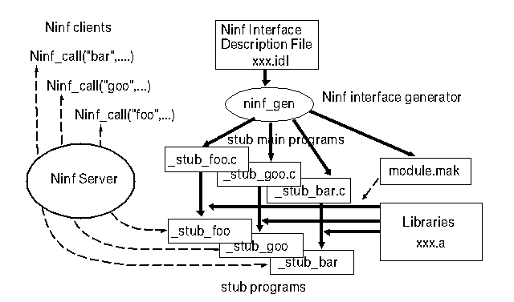

ninf_gen file.idl
This will make a Makefile named 'module.mak' and some '_stub_XXX.c' files.
To make Ninf Executables, you should type:
make -f module.mak
It will make some '_stub_XXX' files.
Module module_name ;
CompileOptions " .... ";
FortranFormat "....";This statement provides translation format. It is similar to the printf format string. You can use following two special characters in the string.
%s : original function name
%l : capitalized original function name
For example, consider to put under score before and after the function name.
FortranFormat "_%s_";With this statement,
Calls "Fortran" FFT(n,x,y);will generate function call in C,
_FFT_(n, x, y) .
Library "....";
Globals { ... C descriptions ... }
Define ninf-name ( paramter1, paramter2, .... )"description" ] Required "files-or-libs"]{ C descriptions } | Calls lang-spec function-name ( arg1,arg2, ... );}For 'lang-spec', you specify the language you implement your numerical library. Currently, you can use 'fortran' of 'C'. 'C' is default. Using this information, the stub generator changes function call sequence. For fortran libraries, the format string specified in FortranFormat statement will be used.
Each parameter must follow the following syntax.
[ dimension [ : range] ]]+
For 'mode-spec', you specify input/output mode: IN, OUT, INOUT, WORK. 'IN' means that the parameter will be transferred from client to server. 'OUT' means the opposite. 'INOUT' means that the parameter will be transferred from client to server firstly, and after the calculation, it will go back to the client. Parameter marked as 'WORK' will not be transferred. Specified memory area will be just allocated on the server side. You can not use 'OUT' for scalar types.
For arrays, you can specify, size, upper-limit, lower-limit, stride. These can be omitted, except for size. For these values, you can use some expressions.
Expression can include constants, other IN-moded scalar parameter in the function definition, and some operators. We provide just 5 operators: +,-,*,/,%. Priority among these operators is same as ANSI C. You can also use parentheses in expressions.
/* program toplevel */
program: /* empty */
| declaration_list
;
declaration_list:
declaration
| declaration_list declaration
;
declaration:
``Module'' IDENTIFIER ';'
| ``FortranFormat'' STRING ';'
| ``CompileOptions'' STRING ';'
| ``Globals'' globals_body
| ``Define'' interface_definition opt_string required interface_body
;
interface_definition:
IDENTIFIER '(' parameter_list ')'
;
parameter_list:
parameter
| parameter_list ',' parameter
;
parameter:
decl_specifier declarator
;
decl_specifier:
type_specifier
| MODE
| MODE type_specifier
| type_specifier MODE
| type_specifier MODE type_specifier
;
type_specifier:
TYPE
| TYPE TYPE
| TYPE TYPE TYPE /* ex. unsigned long int */
;
declarator:
IDENTIFIER
| '(' declarator ')'
| declarator '['expr_or_null ']'
| declarator '['expr ':' range_exprs ']'
| '*' declarator
;
range_exprs:
expr /* upper limit */
| expr ',' expr /* lower limit and upper limit */
| expr ',' expr ',' expr /* lower, upper and step */
opt_string:
/* empty */
| STRING
;
language_spec:
/* empty */
| ``fortran''
| ``C''
;
required:
/* empty */
| ``Required'' STRING
;
interface_body:
'{' /* C statements */ '}'
| ``Calls'' opt_string IDENTIFIER '(' id_list ')' ';'
;
globals_body:
'{'/* C statements */ '}'
;
id_list: IDENTIFIER
| id_list ',' IDENTIFIER
;
/* index description */
expr_or_null:
expr
| /* null */
;
expr:
unary_expr
| expr '/' expr
| expr '%' expr
| expr '+' expr
| expr '-' expr
| expr '*' expr
;
unary_expr:
primary_expr
| '*' expr
| '-' expr
;
primary_expr:
primary_expr '[' expr ']'
| IDENTIFIER
| CONSTANT
| '(' expr ')'
;
/* TYPE = int, unsigned, char, short, long, long float, double */
/* MODE = mode_in, mode_out, mode_inout, mode_work, IN, OUT, INOUT, WORK*/
/* IDENTIFIER = name */
/* CONSTANT = integer literals $B!"(Bfloating point literals */
/* STRING = "..." */
sample.idl:
Module sample;
Library "-lm";
Globals { int x,y,z; }
Define sin(IN double d, OUT double result[])
" This is test ..."
{
double sin();
*result = sin(d);
}
Define mmul(long mode_in int n, mode_in double A[n][n],
mode_in double B[n][n],
mode_out double C[n][n])
Required "sample.o"
Calls "C" mmul(n,A,B,C);
Define mmul2(long mode_in int n, mode_in double A[n*n+1-1],
mode_in double B[n*n+2-3+1],
mode_out double C[n*n])
Required "sample.o"
Calls "C" mmul(n,A,B,C);
Define FFT(IN int n,IN int m, OUT float x[n][m], float INOUT y[m][n])
Required "sample.o"
Calls "Fortran" FFT(n,x,y);
# This file 'sample.mak' was created by ninf_gen. Don't edit
# CompileOptions:
# stub sources
NINF_STUB_SRC = _stub_sin.c _stub_mmul.c _stub_FFT.c
# stub programs
NINF_STUB_PROGRAM = _stub_sin _stub_mmul _stub_FFT
all: $(NINF_STUB_PROGRAM)
_stub_sin:
$(CC) $(LDFLAGS) -o _stub_sin _stub_sin.c ninf_stub_lib.a -lm
_stub_mmul:
$(CC) $(LDFLAGS) -o _stub_mmul _stub_mmul.c ninf_stub_lib.a sample.o -lm
_stub_mmul2:
$(CC) $(LDFLAGS) -o _stub_mmul2 _stub_mmul2.c ninf_stub_lib.a sample.o -lm
_stub_FFT:
$(CC) $(LDFLAGS) -o _stub_FFT _stub_FFT.c ninf_stub_lib.a sample.o -lm
clean:
rm $(NINF_STUB_PROGRAM)
# END OF Makefile
_stub_mmul2.c:
/* _stub_mmul2.c : generated by ./ninf_gen, don't edit. */
#include "ninf_stub.h"
NINF_STUB_INFO ninf_stub_info = {
0,0,0, "sample","mmul2",4,
{
{ 5, 1, 0,},
{ 13, 1, 1,{
{ 3, 2,
{
{2,2,4,1,4,1,4,5,0,0,0,0,0,0,0,0,0,0,0,0,},
{0,0,3,1,1,1,2,0,0,0,0,0,0,0,0,0,0,0,0,0,}
},
0, 0,
{
{0,0,0,0,0,0,0,0,0,0,0,0,0,0,0,0,0,0,0,0,},
{0,0,0,0,0,0,0,0,0,0,0,0,0,0,0,0,0,0,0,0,}
},
0, 0,
{
{0,0,0,0,0,0,0,0,0,0,0,0,0,0,0,0,0,0,0,0,},
{0,0,0,0,0,0,0,0,0,0,0,0,0,0,0,0,0,0,0,0,}
},
0, 0,
{
{0,0,0,0,0,0,0,0,0,0,0,0,0,0,0,0,0,0,0,0,},
{0,0,0,0,0,0,0,0,0,0,0,0,0,0,0,0,0,0,0,0,}
},
},
}},
{ 13, 1, 1,{
{ 3, 1,
{
{2,2,4,1,4,1,4,1,4,5,0,0,0,0,0,0,0,0,0,0,},
{0,0,3,2,1,3,2,1,1,0,0,0,0,0,0,0,0,0,0,0,}
},
0, 0,
{
{0,0,0,0,0,0,0,0,0,0,0,0,0,0,0,0,0,0,0,0,},
{0,0,0,0,0,0,0,0,0,0,0,0,0,0,0,0,0,0,0,0,}
},
0, 0,
{
{0,0,0,0,0,0,0,0,0,0,0,0,0,0,0,0,0,0,0,0,},
{0,0,0,0,0,0,0,0,0,0,0,0,0,0,0,0,0,0,0,0,}
},
0, 0,
{
{0,0,0,0,0,0,0,0,0,0,0,0,0,0,0,0,0,0,0,0,},
{0,0,0,0,0,0,0,0,0,0,0,0,0,0,0,0,0,0,0,0,}
},
},
}},
{ 13, 2, 1,{
{ 3, 3,
{
{2,2,4,5,0,0,0,0,0,0,0,0,0,0,0,0,0,0,0,0,},
{0,0,3,0,0,0,0,0,0,0,0,0,0,0,0,0,0,0,0,0,}
},
0, 0,
{
{0,0,0,0,0,0,0,0,0,0,0,0,0,0,0,0,0,0,0,0,},
{0,0,0,0,0,0,0,0,0,0,0,0,0,0,0,0,0,0,0,0,}
},
0, 0,
{
{0,0,0,0,0,0,0,0,0,0,0,0,0,0,0,0,0,0,0,0,},
{0,0,0,0,0,0,0,0,0,0,0,0,0,0,0,0,0,0,0,0,}
},
0, 0,
{
{0,0,0,0,0,0,0,0,0,0,0,0,0,0,0,0,0,0,0,0,},
{0,0,0,0,0,0,0,0,0,0,0,0,0,0,0,0,0,0,0,0,}
},
},
}},
}
};
/* Globals */
int x,y,z;
/* Stub Main program */
main(argc,argv){
long n;
double *A;
double *B;
double *C;
Ninf_stub_INIT(argc,argv);
while(Ninf_stub_REQ()){
Ninf_stub_SET_ARG(&n,0);
Ninf_stub_SET_ARG(&A,1);
Ninf_stub_SET_ARG(&B,2);
Ninf_stub_SET_ARG(&C,3);
mmul(n,A,B,C);
Ninf_stub_END();
}
Ninf_stub_EXIT();
}
/* END OF Stub Main */